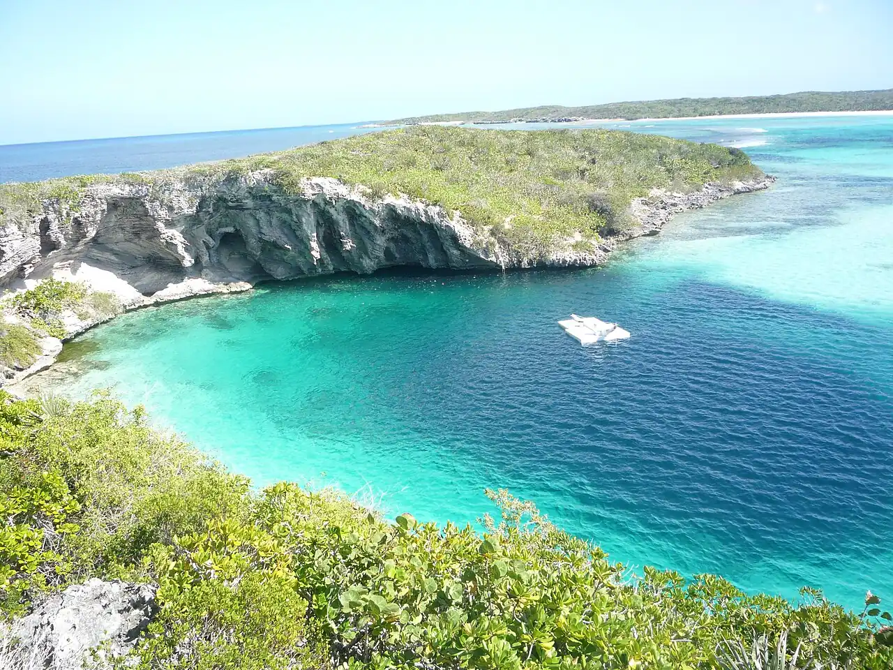

Dean’s Blue Hole
Long Island, Bahamas · snorkeling, plongée, baignade

Trou bleu de 202 m de profondeur ouvert dans une petite baie à l’ouest de Clarence Town. Son bord sableux se prête au snorkeling, et c’est un haut lieu mondial de l’apnée de compétition.
- Lieu
- Long Island, Bahamas
- Niveau
- Variable selon les conditions
- Activités
- snorkeling, plongée, baignade
- Type d'eau
- Mer / océan
- Coordonnées
- 23.11, -75.01 (position approximative du secteur)
Dangers à connaître
- Chute brutale de la profondeur au bord du trou, sans repère vers le fond.
- Apnée : risque de syncope, jamais seul ni sans encadrement.
Le conseil d'Ocean Buddy
Snorkelle au bord du trou avec un binôme ; l’apnée en profondeur se pratique uniquement encadrée, avec une équipe de sécurité.
Ouvrir dans Ocean Buddy Télécharger sur l'App Store
Source : Fiche Ocean Buddy · septembre 2026 · à vérifier localement.